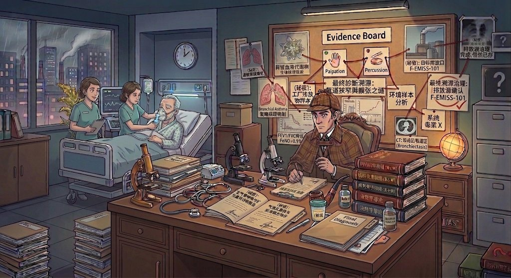

🔍 内科侦探所
呼吸病学系列 · 《内科学》第10版
☆☆☆☆☆
案卷
🔊
1
2
3
4

福尔摩斯
▼ 点击对话框继续
贝克街 221B · 内科分所
内科侦探所
呼吸病学系列 · 《内科学》第10版
致华生医生（你）：
① 每一案是一位新病人。福尔摩斯在对话框里介绍案情，
两次点击
病床上的听诊点——第一次听声音，第二次判断是什么声音（真实听诊音）。
② 档案室里四份报告混在一起，
认出属于这位病人的那一份
（真实临床影像）。
③ 给出
诊断
与
治疗方案
。
④ 全对，病人转危为安；错了……病人可能撑不过这一夜。
依据：《内科学》（第10版）· 《诊断学》（第10版）
走进档案柜
壶兰呼吸
莆田学院附属医院 呼吸与危重症医学科三区 · 老崔
听诊音：B站《肺部听诊合集（14分钟）》真实录音 · 影像：真实临床教学影像
🗄 案卷柜 · 呼吸病学系列
《内科学》（第10版）呼吸系统疾病 · 每案一病 · 持续归档中
—— 待归档（下一批开卷）——
壶兰呼吸
莆田学院附属医院 呼吸与危重症医学科三区 · 老崔
✕
📋 侦探案卷
已收集的证据与教科书出处
（暂无证据，快去听诊病人）
✕
🗂 档案室：四份混淆的报告
点击查看详情，然后认定属于这位病人的那一份。